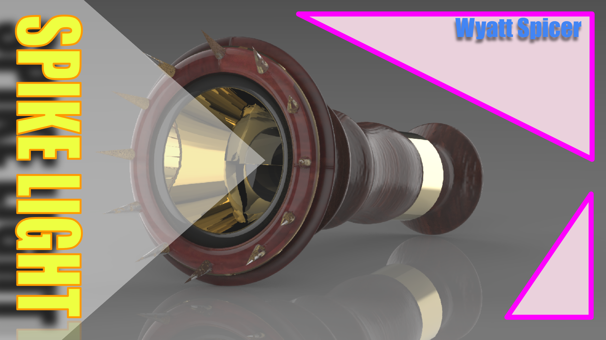
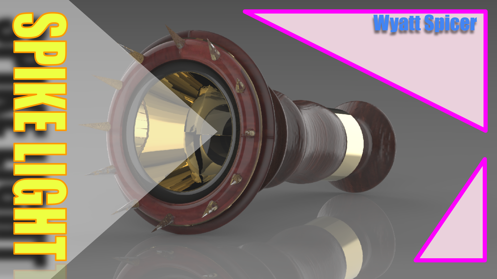

3D Modeling & Fabrication
This section highlights my 3D modeling, rendering, and physical fabrication work. I use Rhino, Grasshopper, KeyShot, and OrcaSlicer to design and prototype objects ranging from character-driven sculptures to functional bar tools and custom accessories. The projects shown here include digital models, mesh cleanup workflows, 3D-printed prototypes on my Ender 6, and final painted or rendered pieces. Each piece reflects my iterative process, blending playful design with technical precision.
 

Tools & Workflow
I primarily work in Rhino, Grasshopper, KeyShot, and OrcaSlicer for my 3D modeling and fabrication process. My workflow often involves creating sculptural forms, functional prototypes, and character-driven objects. I use NURBS modeling, iterative mesh cleanup, and STL optimization for printing on a Creality Ender 6. My process includes rapid prototyping, material tests, and refining models for physical fabrication and final rendering.
Project Types
My work ranges from character-based objects and functional barware accessories to experimental sculptural pieces and interactive installations. I create themed 3D objects, product-design prototypes, and digital sculptures that blend humor, functionality, and storytelling. Many projects explore playful forms, cultural references, or interactive elements that bridge digital and physical experiences.